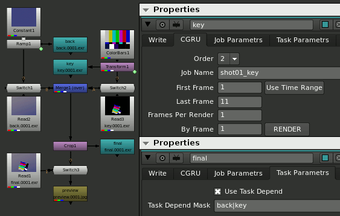
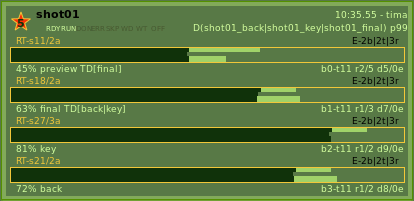
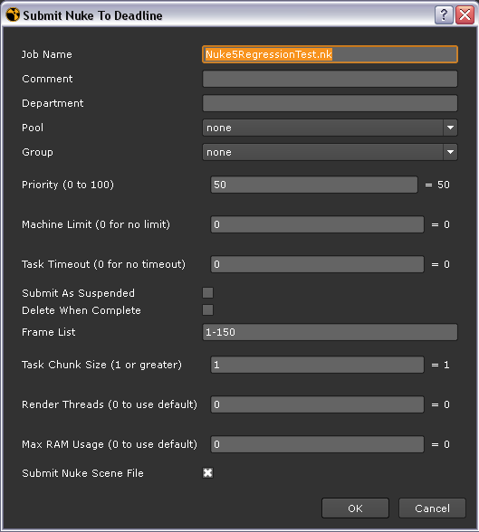

Некоторые Параметры Диспетчеров.
- Мультизадачный клиент.
- Мультиклиентная задача.
- Наличие главного сервера.
- Наблюение за ресурсами компьютеров.
- Зависимость между задачами.
- Зависимость между подзадачами.
- Цена.
Хочу обратить ваше внимание на некоторые параметры диспетчеров. Разговоры о которых, я редко слышал на наших форумах, но они важны.
-
Мультизадачный клиент - диспетчер может поставить несколько заданий одновременно на один компьютер.
Получить от этого выигрыш можно на неравнозначных по мощности компьютерах или неравнозначных по занимаемым ресурсам заданий, и когда у вас и то и другое одновременно, что не редко. Например можно объяснить более сильному компьютеру, что он может запустить 2а или 3и Nuke одновременно, а не один. А ещё сказать, что с тремя Nuke можно ещё запустить несколько простых задач, которые почти не отнимают ресурсов, например что-то конвертят (мы, например, приделываем так всякие полезные надписи к кадрам).
-
Мультиклиентная задача - диспетчер может поставить одно задание одновременно на несколько компьютеров.
Пользу от одно и того же задания на нескольких компьютерах можно получить только если ваша рабочая программа это поддерживает. Например Mantra и RenderMan умеют для просчёта одного кадра использовать несколько хостов. А ещё Houdini 10 умеет так симулить.
-
Наличие главного сервера - или все задачи хранятся на одном сервере и он всем управляет, или у каждого пользователя свои задачи локально.
Например у Alfred-а каждый пользователь запускает у себя менеджер со своими задачами. Вот тут я могу сказать однозначно - с главным сервером намного удобнее. Я думаю, что у Alfred-а этого нет в связи со "стариной" его проектировки, тогда у компьютеров было мало оперативки, процессорной мощи, и один сервер с крупной компанией бы просто не справился. Но это мои догадки, поправьте меня если это не так. В случае когда задачи на компьютерах и у каждого пользователя, их сложно администрировать (в случае с Alfred-ом это практически не возможно). Например нельзя выключить, перегрузить компьютер, если пользователь поставил что-то считаться. Более того нельзя даже залогиниться другому пользователю, не оборвав расчёт. А как быть если это нужно. А что если 2е смены, всё? (но мы правда перебрасывали из папки temp нужные aflred-у файлики, и всё же перелогинивались, но это не дело). А если кто-то запустил задачу и ушёл, а она занимает слишком много ресурсов и не даёт посчитать что-то срочное, да мало-ли что ещё может быть. В общем плохо, когда у администратора нет доступа к другому пользователю. На диспетчере же с единым центром, пользователь с администраторскими правами может делать что угодно с чем и кем угодно. У него такой же полный контроль над вашими задачами как и у вас (и Nimby можно у любого снять не вставая со стула).
-
Наблюдение за ресурсами компьютеров - за какими ресурсами наблюдает диспетчер.
Практически все диспетчеры, следят за памятью и процессором, за исключением самых простейших. Так же ещё полезно следить за SWAP - так как его использование сильно тормозит расчет. Хорошо ещё было бы поподробнее знать чем занят процессор, может его заняла операцонная система, или он ожидает ввода-вывода, и ему не до вашей задачи. Информация о сетевом трафике может помочь выявить проблемы с сетью.
-
Зависимость между задачами - задача не стартует, пока не посчитается другая или другие указанные задачи.
Удобно, например, поставить считаться 3d и композ сразу (и ийти домой), но чтобы композ подождал, когда закончится 3d.
-
Зависимость между подзадачами - подзадача не стартует, пока не посчитаются зависимые.
Тогда можно диспетчеру объяснить, например, что сначала на одном компьютере надо забейкать динамику, потом на одном забейкать партиклы. Потом посчитать все статичные тени в сцене, можно каждую на отдельном компьютере одновременно. Потом для каждого кадра сначала отдельно считать движущиеся тени, можно одновременно на разных компьютерах. А сам кадр можно начинать только тогда, когда посчитаны все статичные тени для всей сцены, и все движущиеся но только для этого кадра. Когда закончится 3д можно считать композ, потом можно сделать preview в виде небольшого видео файла или (и) сиквенции jpg картинок. Простейшие диспетчеры-плагины с этим врятли справятся. Посложнее, типа DrQueue, в принципе могут, но там нельзя сформулировать такую "сложную" задачу, так как это всё не описать в виде одной командной строки. И придётся ставить много разных задач, А описать такую сложную зависимость между разными задачами уже не получится. Т.е. пока не посчитаются все тени для всех кадров не начнётся считаться ни одна картинка. Да и вообще не понятно как диспетчеру, работающему в режиме одна задача - одна командная строка, объяснить что считать надо разные тени, а не разные кадры, может есть только называть источники света типа light1, light2, light3 и т.д. В отношении гибкости Alfred вне конкуренции, так как задача там это скрипт, а не набор правил, пиши что хочешь. Раньше кроме Alfred-a под управлением MTOR-а я такого не встречал. Но это удобно везде. В Гудини тоже очень удобно считать всё по отдельности в нужном порядке. И это полезно не только для 3d. Например в случае сложного композа вы же сохраняете промежуточных результат. Можно в Nuke пересчитать одновременно несколько write-нод. Сначала бэк, кей, потом финальные dpx и жпеги для превью, причём первый жпег выйдет тогда, когда именно для него будут посчитано всё необходимое.
-
Цена - важный параметр любого продутка.
Иногда она равна нулю, но это не всегда означает, что это простейшая любительская программа. Возможно разработчики преследуют другие цели.
Afanasy Nuke Submission
full scene integration - in every write node
|
Deadline Nuke Submission
Dialog
|


|

|